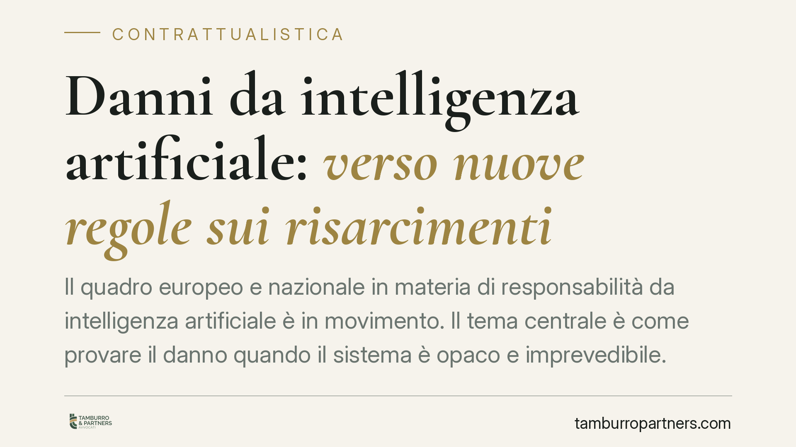

Danni da intelligenza artificiale: verso nuove regole sui risarcimenti
Il quadro europeo e nazionale in materia di responsabilità da intelligenza artificiale è in movimento. Il tema centrale è come provare il danno quando il sistema è opaco e imprevedibile. Le novità allo studio puntano ad alleggerire l'onere probatorio a carico del danneggiato. Per imprese e operatori IA cambiano rischi contrattuali e assicurativi da governare in anticipo.

Il contesto
Quando un sistema di intelligenza artificiale causa un danno, la vittima si scontra con un ostacolo tecnico prima ancora che giuridico: la cosiddetta "scatola nera". Molti sistemi producono risultati senza che il funzionamento interno sia ricostruibile in modo trasparente. Provare *come* e *perché* l'output ha causato il danno diventa complesso, talvolta impossibile.
Su questo terreno si muovono le riforme in discussione, sia a livello europeo sia in sede di attuazione nazionale della delega in materia di intelligenza artificiale. È bene una premessa di metodo: allo stato, alcuni testi attuativi non risultano ancora definitivi nei loro estremi (numero, contenuto, data di efficacia). In questo contributo distinguiamo perciò con nettezza il diritto vigente dalle novità annunciate, trattate al condizionale.
Inquadramento normativo
Oggi, la responsabilità extracontrattuale si regge sull'art. 2043 del Codice civile: chi cagiona un danno ingiusto è tenuto a risarcirlo. La regola sulla prova è quella generale dell'art. 2697 c.c.: chi vuole far valere un diritto deve provarne i fatti costitutivi. Tradotto: spetta al danneggiato dimostrare condotta, danno e nesso causale tra i due.
È proprio qui che l'opacità dei sistemi IA pesa. La riforma europea — in particolare i lavori sulla responsabilità da IA e la revisione della disciplina sui prodotti difettosi — muove verso un alleggerimento probatorio. Due gli strumenti tipici: la *disclosure*, cioè l'ordine al detentore del sistema di esibire la documentazione tecnica; e una presunzione relativa del nesso causale in presenza di determinati presupposti.
Attenzione alla natura di questa presunzione. Si tratterebbe di una presunzione *iuris tantum*, cioè relativa: sposta l'onere sul convenuto, che può fornire prova contraria. È cosa diversa dalla responsabilità oggettiva assoluta, dove non è ammessa prova liberatoria. La distinzione ha effetti concreti sulla strategia difensiva e sulla valutazione del rischio d'impresa.
Sul fronte assicurativo, il modello dell'azione diretta del danneggiato verso l'assicuratore è già noto al nostro ordinamento in materia di RC auto (art. 144 del Codice delle Assicurazioni). Un'eventuale estensione a danni da IA andrà verificata sul testo definitivo: non è scontato che il futuro regime replichi quel modello, e su questo consigliamo prudenza interpretativa.
Implicazioni pratiche
Per chi sviluppa, integra o utilizza sistemi IA, il baricentro del rischio si sposta. Se il danneggiato beneficia di una presunzione di nesso causale, l'impresa dovrà essere in grado di documentare il corretto funzionamento del sistema, i controlli adottati e la conformità alle regole tecniche. La tracciabilità diventa un asset difensivo.
Cambia anche la contrattualistica di filiera. In una catena che coinvolge fornitore del modello, integratore, distributore e utilizzatore finale, la responsabilità va ripartita per iscritto. In assenza di clausole chiare, il rischio ricade in modo imprevedibile e le azioni di regresso diventano fonte di contenzioso.
Diventano centrali le clausole di manleva (l'impegno di una parte a tenere indenne l'altra da pretese di terzi), i limiti di responsabilità, gli obblighi informativi e documentali, e il coordinamento con le coperture assicurative. Una manleva mal calibrata può risultare inefficace o sbilanciata.
Cosa fare in concreto
- Mappate i sistemi IA in uso o in sviluppo, distinguendo ruoli (fornitore, integratore, utilizzatore) e livello di rischio associato a ciascuno.
- Rafforzate la tracciabilità: log, documentazione tecnica, test e controlli devono essere conservati in modo ordinato e recuperabile, in vista di eventuali richieste di esibizione.
- Revisionate i contratti di filiera: inserite o aggiornate clausole di ripartizione del rischio, manleva e limiti di responsabilità, con attenzione alla loro effettiva efficacia.
- Verificate le coperture assicurative e il loro coordinamento con gli obblighi contrattuali, valutando l'esposizione a un'eventuale azione diretta.
- Monitorate l'evoluzione normativa e adeguate le procedure solo su testi confermati, evitando scelte basate su bozze non definitive.
Una nota di metodo
È opportuno avviare per tempo la revisione contrattuale e documentale: non per anticipare regole non ancora vigenti, ma perché una buona governance del rischio IA è già utile oggi e riduce l'impatto delle riforme in arrivo.
---
*Contributo informativo a cura di Tamburro & Partners - Avv. Giuseppe Tamburro. Non costituisce parere legale.*
Ogni contratto ha il suo equilibrio.
Se vuoi una revisione delle clausole o una redazione su misura, scrivi allo studio. Ti rispondiamo entro un giorno lavorativo.